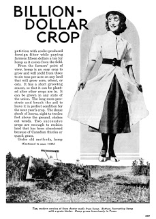

Hamlet:
Denmark's a prison.
Rosencrantz
Then is the world one.
Hamlet
A goodly one; in which there are many confines, wards and dungeons, Denmark being one o' the worst.
Rosencrantz
We think not so, my lord.
Hamlet
Why then 'tis none to you; for there is nothing either good or bad, but thinking makes it so: to me it is a prison.
The United States, nominally a constitutional republic, has a population of roughly 300 million people. That figure represents a rounding error in trying to calculate the population of China, which is a nominally Communist nation. Yet the US has a larger prison population than China.
Granted, in China one can find himself thrown in prison for various ideological crimes that don't involve offenses against persons and property. But the same is true of the United States, as well, even if the specific list of such “offenses” is different.
Subjects of tyrannical governments are left in a state of perpetual insecurity, never certain how or when the “law” will change in such a way that something considered perfectly legal today may be regarded as a grave crime tomorrow. By that definition, the regime ruling the United States is at least as tyrannical as the one ruling China, and as we've observed, the rate of incarceration reflects that reality.

It is difficult to tell how many of the 2,245,189 people held in prisons and jails as of June 2006 (the last year for which figures were available) had been locked up for driving under the influence of alcohol, or for DUI-related probation or parole violations. And of course, drug offenders of various kinds are well-represented in detention facilities of all kinds: By one recent estimate, the imprisonment of non-violent offenders – meaning, for the most part, substance abusers of some variety – accounted for 77% of the growth in the prison population between 1978 and 1996.
Such people are in prison not because they have committed crimes that are wrong in themselves (mala en se), but rather because the State has banned those acts (mala prohibita). A century ago, drug use was not considered a crime of any sort – much less a felony – in most American jurisdictions. Thanks to the “war on drugs,” it is now possible to be imprisoned for growing a non-narcotic that is arbitrarily banned by the same Federal Government that, a little more than a half-century ago, all but required its cultivation: Hemp.
Recently, a group of farmers from North Dakota (including state representative David Monson) filed suit against the Drug Enforcement Agency, seeking to lift the ban on the industrial production of hemp, an immensely profitable cash crop that can be used for food, fiber, and fuel. Oilseed and fiber hemp cannot be used to produce the narcotic commonly called marijuana. The State of North Dakota has licensed its production. And yet the farmers would find themselves subject to prosecution and imprisonment unless the DEA issues the appropriate permits, which the agency is unwilling to do.

Do my eyes deceive me, or is the battle-scarred sailor in this 1942 war propaganda poster seeking comfort in an elaborate water bong?

Seven decades ago, when FDR and his gang were in charge of the regime, cultivation of fiber hemp was encouraged as a “patriotic duty.” In 1938, Popular Mechanics published a feature story extolling hemp as a “billion-dollar crop” that could lift American farmers from the slough of the Great Depression. Ironically, at the time (as we'll shortly see) an effort was already underway to criminalize hemp production.


After FDR successfully maneuvered the US into World War II (albeit with the timely help of Imperial Japan), growing fiber hemp – for various naval applications -- was seen as vital to the war effort, as this 1942 federal propaganda film illustrates:
This dull but informative agitprop film depicts hemp as a splendidly useful – nay, miraculous – plant whose multifarious uses had blessed mankind since time immemorial. It also reported that, with Japan seizing control of vital hemp supplies overseas, the cultivation of American hemp was a major war priority. Accordingly, in 1942, 36,000 acres of seed hemp planted “by patriotic farmers at the government's request” who had received the appropriate federal registration and tax stamps.
In 1937, the Federal Government, working in collusion with the politically well-connected DuPont corporation (a military contractor that was developing synthetic plastics and wanted to beat down competition from hemp-based fiber products) covertly plotted to criminalize production of hemp through the use of suffocating taxation and regulation. This was exactly the same strategy, incidentally, that inspired the 1934 National Firearms Act, the first step in what was intended to be the disarmament of the American people.

"Dude, that looks like some righteous weed!" exclaimed Harry Ansligner (left, affecting a casual pose in his overcoat) as his homiez took stock of their newly acquired stash.
Anslinger was hopelessly addicted to lurid stories – none of which was ever documented -- of marijuana-crazed people committing hideous crimes, including rape, murder, and “miscegenation.” (Oh, didn't I mention that Ansligner was particularly preoccupied with the idea that black people are particularly susceptible to marijuana, and that one particularly acute danger posed by the demon weed was its supposed role in breaking down the barriers against “race-mixing”?)
Following World War II, when it was documented that marijuana did not promote outbursts of violent, aggressive behavior, Anslinger – in a fashion worthy of Orwell's Ministry of Truth – reversed field entirely. By 1948, he insisted that the same drug that turned men into paranoid, predatory criminals and white women into aggressive sluts would somehow turn young people into weak-willed pacifists unwilling and unable to obey the muster call to take arms against the Communist Menace.
Clearly, marijuana – at least as described by Anslinger – was a uniquely versatile substance. In testimony under oath before Congress in 1937, Anslinger insisted: "Marijuana is the most violence-causing drug in the history of mankind." Eleven years later, once again under oath, he warned that Communist powers would flood the country with marijuana in order to leave our youth too torpid and blissful to pick up a gun.
Neither of these descriptions was truthful, of course. But each was useful in its time for Anslinger's objective, which was to create a pretext for expansion of federal power to regiment individual behavior.

Well, they had a point: A Canadian cartoon, circa 1931, ridicules the American experiment in social regimentation called "Prohibition."
Prior to 1937, marijuana consumption was neither good or bad from the State's point of view. The same was true of alcohol consumption before 1920, and after 1933 – an historical parenthesis during which Anslinger and his ilk wrought havoc in the name of Prohibition.
Make sure to check out the Liberty Minute archives, and to drop by The Right Source.
11 comments:
The myths surrounding weed and its effects never cease to amaze me. If anything it causes one to care less about the world around them and unfortunately can at at times lead to a spirit of both physical and intellectual laziness. despite this it is hardly the drug that would cause our society to implode. The only problems that truly surround weed are the cartels that have arisen ( to grow and distribute on a mass scale) due to its illegality. These syndicated crime groups always lead to heightened
crime. This is due in part to the fast money that can be made by those with limited opportunities and/or education. Most of the consumers of the product are not "hardened" criminals but instead spiritually lost people filling a void and deadening their pain any way they can find.
I agree with you about the faux reasoning for the illegality of the ubiquitous cannabis plant. In my mind, it's not even on the same planet as hardcore narcotics in terms of the only aspect that matters - mind alteration. There is very little, except for lethargy, decrease in inhibitions, and memory damage from long term use that afflicts some folk.
I, like most I'm sure, have indulged in cannabis. I've smoked cigarettes since my HS days, but when I experimented with marijuana briefly during that time, smoking merely one joint was like smoking ten cigs at once, in addition to the mind-numbing lethargy it kindled that nhforester mentioned. I just didn't care for the lung irritation and the lethargy, but only the lethargy is a mind-altering element to some degree, albeit very minor. The rest is physical as with cigarettes.
What I find interesting to contemplate in my mind is that I often wonder if most folk are really turned off by, or opposed to, cigarettes simply because of the smoke, possible risk of lung cancer, and of course the State's constant admonitions and increased regulations, but rather because it has essentially zero mind-altering effects, not even the lethargy of the mind mentioned earlier with cannabis.
We saw what happened when a total ban on alcohol was implemented from 1920-33, despite the health issues directly or indirectly related to heavy alcohol consumption. Yet, if I was wagerer, I'd bet the house that that same kind of massive opposition from the public at large would not materialize if cigarettes were to be, say, categorized as illegal narcotics in the same vein as cannabis.
When I say "opposition" above, I don't necessarily mean street protests and marches on Washington. No, I really mean flagrant disregard for the "law" (Constitutional law ironically with Prohibition) and do it anyway. The same with drugs, etc., etc.
See, the bottom line here is that it's all about subjective mindsets, Will, NOT THE FACT THAT THE STATE HAS IT'S REPRESSIVE HANDS INVOLVED!
As long as the State is helping to progress (or regress, depending on your point of view) society along THEIR WAY!, the societal segment in question clearly has no beef with the State whatsoever.
As has become all too clear to me over the years, what one individual may view as a "right," another may view as a "health menace." What one individual may view as "repression," another may view as "harmonization" or "equalizing." Another "right" angle is that what one may view as a "right" to associate with whomever they wish, another views as "discrimination" and "intolerance." And so on it goes.
The critical common thread here, however, is that every one of those individuals, almost without exception, will attempt to USE THE STATE TO MANDATE THEIR WAY!
Sigh....................
In my view, it's all entirely a crappy, but in no way a surprising, reality about humanoids in general, Will :(.
You know, something just came to my mind with your Canada cartoon jibe. What's ironic about the Canada cartoon, in conjunction with your comments about the tyranny of the Amerikan State in general, is that I would likely have a greater chance of seeing the inside of a Canadian jail than I do here in Amerika. I don't care for D-I-V-E-R-S-I-T-Y, I don't care for Soviet-level restrictions on free speech and religion in public venues (although that's quickly becoming the reality here too), and so on. Ergo, I would ignore their "laws" that so mandate and would probably be arrested in short order.
See, it all seems to depend on where ones interests and views, in toto, lie in regards to freedom and liberty. In other words, there's no objective view of freedom and liberty anymore, it's all subjective. The State is apparently only looked upon favorably by each societal segment solely for the advancement of that particular segment's views and/or agendas, but as diabolical if the State represses, outlaws, or otherwise regulates that particular segment's views and/or agenda. And, usually the majority's view does prevail (i.e. repeal of Prohibition, etc. over the years) in the finality of it all, especially in this age of democracy über alles. Whether or not the State managed to use the Hegelian dialectic to sway the views of the majority into a given corrupted mindset is to be certainly noted, but if the populace possessed an objective view of what's right, wrong, and constitutional, the State-media-complex could not so sway their minds so easily to start with. Nevertheless, the results are irrelevant to the hapless minorities who harbor differing views or agendas and are thereby suppressed accordingly.
It's becoming increasingly clear that not only our society, but the entire world to some degree, is morphing into a classical democracy (whether it's State-orchestrated or not) in so many ways that it doesn't bode well for the minorities, whomever they be, living among those majorities.
The only way I can see to remedy this conundrum is to yank the power of the State out of ALL societal segments' hands, perhaps revert to mere tribes and clans of similar mindsets, shared cultural values, customs, etc. Then I'd be the first to rejoice, and loudly!
Of course it won't happen, in this life anyway. It's merely a pipe dream since, historically speaking, virtually every State that has ever existed, even the purely homogenous ones, as well as the populace itself that shapes and sustains it, eventually becomes corrupted. Why should we then arrogantly think Amerika will be the exception?
Well, needless to say, I don't think we will be that lone exception.
When the corruption reaches a certain zenith in a given society and its attendant State, it's time for it to die, to be dissolved into another culture, or reduced to a shell of its former glory.
Whichever method of death or dissolution of the old order occurs, one thing is certain. Yet another newfound State will replace the previous one.
Then, what? Utopia? No, the cycle merely repeats itself. Gee, ain't humanity just so predictable in the grand scheme of things?
Dixie, I'm the product of German American upbringing and have lived overseas in both Germany and Japan while growing up as a kid and as an adult. In all my time while out of the USofA the one thing that continually struck me between the eyes was the incessant moral hypocrisy demonstrated by the American government in particular and so many of its people in general. Only in the States do you have folks getting seriously bent out of shape over alcoholic beverages and the like (a "legal" drug by any definition). Why in Germany it was typical to see kids under ten years of age going to the local gasthaus to pick up beer for the evening dinner table! Why? Because thats just how it was, and besided they'd warn you that the tap water wasn't so good so it was best to stick to the beer. Holy cow! In Japan there were beer vending machines on the street corners. Some even served beer/whiskey mixers right next to the machine that sold frozen beef steaks! Just pop in your coins and you'd get an icy cold one. No cops to jump out of the shadows and wrestle you down if you happened to be "under age". Did I see drunk people? Sure. Plenty of homeless bums and businessmen at the train station and elsewhere, but for the millions of people that I rubbed shoulders with they were a very small minority. Are there alcoholics and drug abusers around? Certainly... just as there have been from time immemorial, but the more I see of the heavy handed governmental diktats coming down the more it reminds me of the Nazi's and their anti-smoking campaigns. Seems even they goose-stepped to that sort of "healthy" fascism. Don't think it worked though... Seems the Nazis wanted the money just like other governmental vampires. Still, that sort of thinking keeps coming back time and again begging for a stake through its heart. Its only when the "mystery" is taken away from it and its no longer "verboten" that the excesses will decline.
Only in the States do you have folks getting seriously bent out of shape over alcoholic beverages and the like (a "legal" drug by any definition).
Exactly, I didn't mean to give the impression that Prohibition or some other LAW against a given vice was right, dammit! I'm only pointing out that various segments of society will attempt to use the State to enforce their way; WHATEVER "that way" may represent is irrelevant to the point. In some cases, of course, the view(s) in question will happen to be a majority view (in the case of alcohol consumption, etc.) or not (in the case of cigarette smokin', etc.) and become a significant substance of the culture as a whole.
I hate hypocrisy in the abstract and it runs rampant today just about everywhere, involving just about every issue on the table. So I just like to point it out every now and then.
Why in Germany it was typical to see kids under ten years of age going to the local gasthaus to pick up beer for the evening dinner table!
Yes, I know. When I was in Germany ('86-'90), there were cigarette machines perched on village streets. I utilized them in a crunch when I didn't have time, it was late at night, or wasn't sober enough, to drive the measly 10 clicks to the commissary on Hahn ;).
Why? Because thats just how it was, and besided they'd warn you that the tap water wasn't so good so it was best to stick to the beer. Holy cow!
Yes, I hear ya DrFix. Been there, done that. The bottom line is that if you're merely interested in partyin', slamin', or driving fast (although I hear they're instituting more speed limits on the Autobahn these days), as I was more or less back then, Germany is an accomodating place with few restrictions in those areas ;).
I had a buddy, whose Ulpa and Ulma (Großeltern) lived in Nürnberg, and he kept his abode well-stocked with beer. Never refrigerated, didn't need to be as the room he stored it in was consistently 40° or so. I can't recall the brand right off now, but we indulged heavily every time we visited them.
In Japan there were beer vending machines on the street corners. Some even served beer/whiskey mixers right next to the machine that sold frozen beef steaks!
Yes, same as Germany with cigarettes as noted above.
Anyway, I think you might be misconstruing what I'm saying, perhaps, DrFix. Let me attempt to clarify, I'm not saying whether drugging, drinkin' slammin', eatin', hatin', pro-diversity, anti-diversity, pro-gay, anti-gay, or the entire mantra of behaviors and viewpoints that exist about ANYTHING, other than crimes against people and property, are "right" or "wrong" in regards to whether they be regulated, outlawed, or formulated via the State.
I heartily agree with those that think the State shouldn't be involved in ANY of the aforementioned, except for real crimes.
HOWEVER, the fact remains that most factions, whether they be the Lavender-Leninists, Ecclesio-Leninists, libertine-Leninists, anti-Christian bigots, diversity freaks, and sundry others, apparently don't agree and are using the State, if possible, to suppress any and all opposition to THEIR WAY!
That's all I'm sayin'. I hope that helped in clearing the mist.
Ulpa and Ulma
Sorry, should be Oma and Opa. I have forgotten most of the colloquial German, of which I once had a solid grasp of, since it's been over 17 years now.
BTW Will, on a side note, is your upcoming book From Republic to Reich: How The Imperial Executive Swallowed the Bill of Rights still in the offing?
Forgive my ignorance, but what are the freest nations in the world today. Some friends and I were having this discussion and one had been to some country, not Nepal but somewhere in that mountainous region that looked to be free from all government interference. It was an agricultural society that had the internet but no cars and it was nominally ruled by a crown prince. Another said Switzerland. They have mandatory conscription, but it seems to be more like a cultural rite of passage, enjoyed by most. When I was there it appeared very carefree and wealthy. The people were friendly, didn't care who you were, and you could drink in public. They also didn't have ANY gun control there, with all households having handguns and machine guns. Don't know if that is still the case though.
Dixie, I'm with you man! I can't stand any entity, regardless of whether its here or "there", that takes pleasure in using the state to bludgeon people into compliance for obviously non-threatening behavior. The fact that "statists" of whatever political or religious leaning will use the power of the State to mandate "morality" shows how blind they truly are. Especially when you hear them squawk about this or that when that same stick is used to knock them around. They shouldn't be since they're the ones who lovingly crafted the very tools of their own punishment. And just to be clear I wasn't pointing to you... just commenting in general.
Zachary... Switzerland mandates some sort of military training, kinda like the Gaurd (albeit without the foreign adventures). Funny when you think about. The Swiss with all those guns and yet they don't go off their nut like the Yanks do time and again. Maybe its something in the water. You think? Contaminating our precious bodily fluids a-la General Jack D. Ripper?
That should be Guard... not Gaurd... Good grief!
Forgive my ignorance, but what are the freest nations in the world today.
Well, zachary, as I alluded to earlier in my posts, I think it depends on what the nation's societal subjective views consist of pertaining to unrestrained or minimally restrained freedom and liberty to exercise what you find most interesting in life.
For example:
Germany => If you like to drink, slam (fornicate), smoke, drive fast, abort, and such, you have much freeeeeeedddddddooooooom to indulge and enjoy those activities. Much is subsidized by government over there, including the church.
On the other hand, if you want to homeschool your children, own guns, associate with whom you wish on the job, at church, or any public venue, and such, forget it. There's little to no freeeeeeedddddddooooooom to practice those activities.
Also, and this is old news now, if your wife or girlfriend becomes unemployed for whatever reason, instead of collecting unemployment while attempting to obtain another appropriate job, she better be ready to play ho (if there's a opening in a brothel) as a job or forfeit her unemployment compensation.
Like the Hamburg lawyer said, "The new regulations say that working in the sex industry is not immoral any more, and so jobs cannot be turned down without a risk to benefits.”
Hey, like I said earlier the popular culture (or populace) "shapes and sustains" its attendant State. That's the way it is, unfortunately.
Yes, I don't agree with government handouts, but that's another whole complex issue altogether. And this is Europe we're talking about here.
The relevant point here is that she has to be willing to play ho or she doesn't get any unemployment dough. Yeah, forced to, in essence, slam for her spam, be a lay for her hay, etc. This is apparently fine with the majority of the populace and therefore it has no beef with the State enforcing THEIR WAY!
In addition, if you like high taxes in general, a high VAT (not the same as a sales tax, more insidious), high fuel prices, high food prices, etc. then you'll LOVE being a businessman or a consumer there! Of course, most of the tax regimen is EU-centric nowadays since Germany is a major member of the EU, the member with the largest economy in fact.
Once again, the term "freedom" and "liberty" is completely subjective to most folk these days, in America as well as Europe.
So the determination of which country is the "most free" is meaningless in the abstract. It's only meaningful when you take a certain faction, whose main interests in life fit a given country's "freedom" profile.
For instance, let's say a given faction or group of folk like doing drugs, slamin', drinkin', desires euthanizing their "old man" and "old lady" at a whim if they ever decide to claim that their "quality of life" is below par and are a burden.
That group would no doubt consider Holland a tempting choice as a land with the most freeeeeeedddddddooooooom! Why? Because it most closely matches that group's mindset, value system, and main interests in life.
Anyway, I'm sure you get the idea.
Oh, and one more thing about Germany.
Here's a real oxymoron for ya. While your wife or girlfriend might need to play ho for her government dough, that same pious, self-righteous, German State censors violent PC games. Of course, naturally the EU is trying to harmonize the regs pertaining to games.
Yet, if the game was chock full of sex only, there'd be no restrictions other than age, and those are minimal.
Nah, those Europeons don't really restrict freeeeeeedddddddooooooom!
I repeat, freedom is subjective everywhere these days. So, before folk just spout off mindlessly about some "freedom paradise" they plan to "flee" to, as is often seen in online forums, they might want to make sure their personal concept of "freedom" at least nominally matches the mainstream culture of the destination country.
Ironically, some of the most third-world countries with the most draconian of laws are quite free - if you can grease the wheels.
What's sad here in the US is that the professional police are also seen as upholders of morality, despite how immoral and despotic they are, and enough of them buy that image that it's difficult to tell whom amongst them can be bribed, and since they're highly-paid professionals, it's expensive to do so. In crappier countries - even ones as close as Mexico - police are often seen as the parasites they are and treated as such. They understand their little role, and they also aren't paid as much as cops here. They are cheaper and more likely to be bought off.
Outside of that, regulations in tyrannical governments tend to be unwieldy and often impossible to enforce (let's face it - even here in the efficient USA, most drug users, speeders, and illegal-gun owners get away with their offenses).
I'll say from experience it's a hell of a lot easier to find, buy, and tote around a real AK in these third-world countries that have anti-gun laws than it is to own even a bastardized (but "legal") version here - usually cheaper, too.
If you want to be free, go live in a cave in the middle-of-nowhere, in Mexico, Africa, the former Soviet bloc, or South America. Be prepared, like anywhere else, but that's where freedom can be found. It certainly isn't here.
If you want to stay in the USA, I suggest Vermont. Better ye: Alaska.
Outside of that, I'm looking at Switzerland as a fun place to scope out in case I have to bail on this country. Everybody owns an assault rifle and nobody blinks if you decide to go ride your bike with it strapped to your back. That'd be a hell of a thing.
Post a Comment